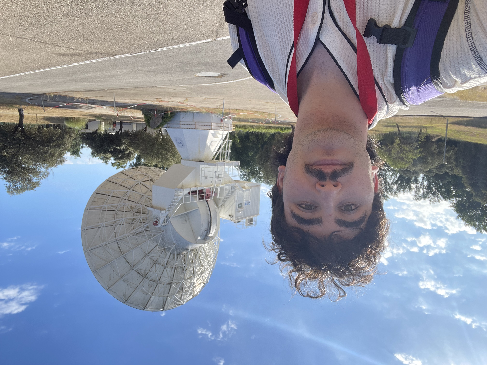

Hi there! Thanks for stopping by 👋

ESAC, MadridI’m Rafael—though almost everyone calls me Rafa. (In Spain, shortening Rafael to Rafa is second nature, so feel free to use either!)
I am a Physics graduate from Universidad Complutense de Madrid, currently based in Denmark for my Master’s in Astrophysics at the Niels Bohr Institute (University of Copenhagen). My path into astrophysics has always been guided by a deep curiosity about exoplanetary systems, planetary habitability, and astrobiology. Over the years, I’ve developed a strong passion for applying data science to space—building Python pipelines, analyzing observational data, and modeling exoplanetary environments.
But science is only half the picture for me. I consider myself an active, creative, and collaborative person who loves taking initiative—whether that means co-founding a cultural student association back in Madrid or diving into new team dynamics in Copenhagen. I firmly believe that being a good scientist also means being an open-minded communicator.
Outside of academia, you’ll usually find me staying active. As a former competitive swimmer, sports are a big part of my daily routine, and I regularly spend time working out at the gym. On the more quiet and creative side, I enjoy reading and writing poetry, which keeps my imagination fresh and my mind clear. I’m also a firm believer in the small rituals: you’ll rarely see me without a good coffee (or hot chocolate) in hand, and I’m always on the lookout for new foods and local spots to try wherever I go.
Take a look around to explore my research and projects, and feel free to reach out if you’d like to chat about exoplanets, code, poetry, or research!